챗GPT 하나만 보고 판단할 수 없음 · ChatGPT · Gemini · Perplexity 여러 엔진에서 테스트
같은 질문이라도 엔진마다 추천 병원이 다르게 나옴
출처 : 국내 GEO 업계 공개 분석 ) · 업체 공개 데이터 기준 · 자체 검증 전
차단 정책
AI가 원문을 읽지 못하는 네이버 블로그
네이버에만 글이 있으면 외부 AI가 원문을 직접 수집하지 못합니다 · 네이버 자체 AI 브리핑은 자사 데이터라 예외
네이버 블로그
blog.naver.com
✕
robots.txt 전면 차단 "AI 학습 · RAG 봇 접근 엄격 금지"
GPTBot · OAI-SearchBot
Google- Extended
ClaudeBot
PerplexityBot
네이버 블로그에만 있는 글은 외부 AI가 원문을 직접 수집하지 못함 (커뮤니티 재인용 등 간접 노출은 예외)
인용되려면 자체 도메인 등 구글과 AI가 읽는 곳에 글이 있어야 함
네이버 블로그 robots.txt 원문2026.08 조회
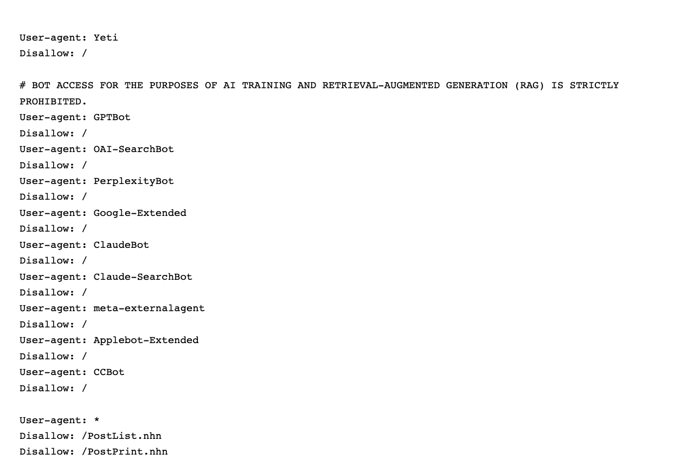
차단 대상은 외부 AI(ChatGPT · Gemini 학습 · Perplexity · Claude) · 네이버 안 AI 브리핑은 계속 블로그를 인용합니다 · 정책은 변경될 수 있음
엔진별 대응
엔진마다 다른 확인 항목
수집 경로가 다르니, 둘 곳과 점검할 것도 엔진별로 다릅니다
엔진
주요 수집 경로
확인할 것
ChatGPT
Bing 계열 색인 + OAI-SearchBot
사이트가 Bing에 색인되는가 · OAI-SearchBot 차단 여부
Gemini · AI 모드
구글 검색 · 지도 · 유튜브
구글 색인 · 비즈니스 프로필 완성도 · 유튜브 자막
Perplexity
자체 크롤러 + 커뮤니티 문서
PerplexityBot 허용 · Reddit 등 커뮤니티 답변 존재
네이버 AI 브리핑
네이버 내부 데이터
블로그 · 플레이스 · 스마트블록 대응 (기존 네이버 운영)
각사 공개 문서 · 크롤러 명세 기준 · 세부 가중치는 비공개라 반복 관측으로 확인
다섯 단계
AI 답변에 병원이 등장하기까지
글이 AI가 읽는 곳에 있다면, 그다음은 이 다섯 단계
어디에서 막혔는지에 따라 손댈 곳이 달라집니다 · "AI에 나오나요?" 하나로 묶지 말고 단계별로 따로 봐야 합니다 · 커버한 질문 수 · 우리만 빠진 질문도 함께 기록
인용과 추천의 간격
글은 인용됐는데, 병원은 추천되지 않는 경우
일어나는 일
인용은 됨
✕AI가 우리 칼럼을 출처로 읽음
✕그런데 추천 목록에는 다른 병원
✕글쓴이와 병원의 연결 정보가 약해서
필요한 연결
저자 ↔ 병원
·저자명 ↔ 병원명 ↔ 전문 분야
·공식 프로필 페이지 ↔ 홈페이지
·구조화 데이터로 기계가 읽는 연결
칼럼이 인용되는 것과 병원이 추천되는 것은 별개 · 그래서 저자·병원 연결 구조를 함께 만듦
Representation
등장 여부보다 소개되는 방식
"색소 진단을 세분화하는 원장" 병원이 원하는 소개
vs
"가격이 저렴한 피부과" AI가 실제로 한 소개
확인할 것 ① 사실인가 · 없어진 시술 · 옛 가격이 남아 있지 않은지
확인할 것 ② 원하는 방향인가 · 진료 철학과 맞는 소개인지
확인할 것 ③ 어떤 출처 문서 때문에 그렇게 소개되는지
"색소 진단을 세분화하는 원장"을 원했는데 AI가 "가격이 저렴한 피부과"라고 소개하면 오는 환자가 달라집니다 · 설명을 바꾸려면 AI가 읽는 근거 문서를 바꿔야 합니다
2026년 GEO 점검 가이드도 인용 여부만이 아니라 답변 속 브랜드 표현의 정확성 확인을 권함 (Search Engine Land)
세 가지 경우
AI에 우리 병원을 물어보면 생기는 문제
문제 1
아예 안 나옴
원인 : 공개 정보 부족 · 경쟁 병원의 근거가 우세
문제 2
나오는데 정보가 틀림
원인 : 오래된 홈페이지 · 플레이스 · 외부 페이지
문제 3
병원은 나오는데 원장이 없음
원인 : 경력 · 논문 · 진료 기준이 검색 가능한 페이지에 없음
문제 1(안 나옴)은 질문 · 근거 파트에서, 문제 2(정보 틀림)는 개원 인프라에서, 문제 3(원장 없음)은 근거 파트에서 순서대로 풉니다
[ 1-4 ]
AI가 인용하는 콘텐츠, 환자의 질문으로 만들기
키워드가 아니라 질문 단위 · "기미 레이저" 검색량 대신 "수유 중인데 토닝 되나요"라는 문장
연구 단위의 변화
키워드 연구에서 질문 연구로
AI가 인용하는 콘텐츠를 만들려면, 단위부터 키워드가 아니라 질문입니다
키워드 연구
검색어 한 번
✕"기미 레이저" 검색량 · 순위
✕한 번의 검색어를 기준으로
✕대응 : 키워드별 글 발행
질문 연구 (Prompt Research)
질문의 연쇄
·질문 → 조건 추가 → 비교 → 후속 질문의 연쇄
·환자가 실제로 묻는 문장을 목록화
·대응 : 질문마다 답이 되는 문서 준비 · 답변 관측
검색 업계는 prompt research를 SEO · GEO의 다음 연구 영역으로 다룸 (Search Engine Land, 2026)
질문 연쇄
기미 환자 한 명의 질문 다섯 개
1
증상
"30대인데 기미가 갑자기 심해졌어. 토닝부터 받아야 해?"
2
진료 방식
"기미랑 잡티를 구분해서 봐주는 피부과를 찾아야 해?"
3
조건
"전문의가 직접 보면서 과하게 권하지 않는 곳은?"
4
비교
"A의원과 B의원 중 색소 진료를 더 많이 보는 곳은?"
5
검증
"A원장 경력이랑 후기 알려줘"
1~2번에는 병원명이 없고, 4~5번에서 병원명 · 원장명이 등장 · 단계마다 답이 되는 문서가 다름
질문 단위
환자 질문이 곧 콘텐츠 목록
콘텐츠 주제 출처 : 진료실에서 실제로 받는 질문
키워드 방식 (기존)
수백 병원이 경쟁
✕"이수역 피부과"
✕"기미 레이저"
✕"보톡스 가격"
같은 키워드에 수백 개 병원이 경쟁 · 글의 차이가 없음
질문 방식
원장의 답이 들어감
·"기미랑 주근깨는 같은 레이저로 되나요"
·"레이저 토닝 후 붓기는 며칠 가나요"
·"수유 중인데 이 시술 받아도 되나요"
·"이 시술은 안 하는 게 낫다는 경우도 있나요"
질문을 쪼개면 그제야 원장님 얘기를 넣을 자리가 생깁니다 · "기미란 무엇인가"는 누가 써도 비슷하지만, "어떤 경우에 토닝부터 안 하는지"는 그 원장님만 할 수 있는 얘기입니다
질문 지도
환자 질문 지도 · "기미" 한 주제
증상 · 진단
기미인가 잡티인가 갑자기 진해진 이유 출산 후 생긴 색소
치료 선택
토닝이 맞는 경우 피코가 맞는 경우 IPL은 어떤 경우
안전 · 불안
더 진해질 가능성 색소침착(PIH) 임신 · 수유 중
생활 조건
결혼식 2주 전 여행 전 다운타임 없는 치료
의사 선택
피부과 전문의인가 누가 직접 시술하나 색소를 많이 보는가
병원 선택
지역 · 야간 진료 가격 · 예약
비교
토닝 vs 피코 A병원 vs B병원 피부과 vs 관리샵
콘텐츠 계획
우리 글이 답한 질문은 몇 개? 답 없는 질문부터 씁니다
기미 관련 콘텐츠 계획 예시 · 주제 하나에서 질문 30~50개 · 시술별로 같은 지도를 반복
질문 하나를 따라가면
질문 하나에 필요한 공개 정보
원장 프로필 페이지 (병원 홈페이지)
기미 치료에 대한 원장의 기준 글 (구글에 노출되는 네이버 외 블로그)
시술 · 가격 안내 페이지 (병원 홈페이지 · 자체 칼럼 사이트)
병원 밖 공개 페이지 (병원이 아닌 제3의 외부 사이트 · 논문 DB · 커뮤니티)
"이렇게 하면 추천된다"가 아니라, 답의 재료가 존재하는가의 문제 · 그 재료를 어디에 둘지가 다음 파트
AI 검색
이수역 근처에서 기미 상담받으려는데, 너무 강하게 시술하지 않는 곳 있을까?
색소 상태에 따라 접근이 다릅니다. ○○의원 김○○ 원장은 "이 정도 색소라면 처음부터 강하게 치료하지 않습니다"라고 설명합니다 출처.
원장 칼럼병원 홈페이지플레이스
[ 1-5 ]
그 콘텐츠가 놓일 자리, 병원 정보의 구조
홈페이지 · 원장 프로필 · 리뷰 · 지도 · 논문, 여섯 영역의 일치
출처의 범위
홈페이지 하나만 보지 않는 AI
홈페이지
병원이 말하는 우리
리뷰 · 커뮤니티
환자가 말하는 우리
기사 · 논문 · 학회
제3자가 확인하는 원장
블로그 · 칼럼
축적된 설명
유튜브 · 영상
자막 · 설명까지 읽힘
디렉토리 · 플레이스
기본 정보
AI는 한 군데만 보는 게 아니라 이런 정보를 같이 봅니다 · 그래서 홈페이지만 잘 만들어서는 끝나지 않습니다
여섯 영역
검색과 AI가 읽는 병원 정보의 여섯 영역
공식 정보
병원명 · 주소 · 진료시간 · 의료진 · 진료과목
전문성 근거
전문의 · 경력 · 논문 · 학회 · 저자 프로필
진료 기준
무엇을 하는가 · 무엇은 안 하는가 · 어떤 환자에게 적합한가
제3자 확인
리뷰 · 기사 · 논문 DB · 학회 · 커뮤니티
위치 정보
지도 · 플레이스 · Google 비즈니스 프로필
콘텐츠
질환 · 시술 · 비교 · 비용 · FAQ · 유튜브 영상
중요한 건 이 정보들이 서로 다른 말을 하지 않는 것 · 여섯 영역이 같은 말을 할 때 검색과 AI가 같은 병원으로 인식합니다
AI 노출을 사이트 내부 최적화만이 아니라 entity 신호 · 외부 출처까지 함께 보는 접근 (Search Engine Land, 2026)
정보 일치
같은 병원, 채널마다 다른 정보
GEO 하기 전에 이것부터 맞춰야 하는 병원도 많습니다 · 가상의 예시
검색 경로
병원 검색 뒤에 이어지는 원장 검색
여섯 영역 중 전문성 근거 칸 · 피부과에서 특히 무거운 축
그래서 병원만 만들어 놓으면 안 되고, 원장도 같이 검색되게 만들어야 합니다 · 실제 비중은 문진 기록으로 확인 (상담에서 반복 관찰되는 패턴)
개원과 경력
개원 직후, 온라인에 있는 것과 없는 것
원장에게 실제로 있는 것
경력 · 논문 · 경험
·전문의 · 대학병원 경력
·논문 · 학회 활동
·수천 건의 시술 경험
개원 직후 온라인에서 확인되는 것
거의 빈 검색 결과
✕병원명 · 주소 · 전화번호
✕그 외에는 거의 없음
개원 초기에 원장 프로필 페이지를 먼저 만들어야 하는 이유 · 경력은 옮겨 적어야 자산이 됨
실물
한 URL에 모은 원장 정보
사례 병원의 영문 프로필 · 병원명 · 사진 가림
원장 프로필 페이지병원명 가림
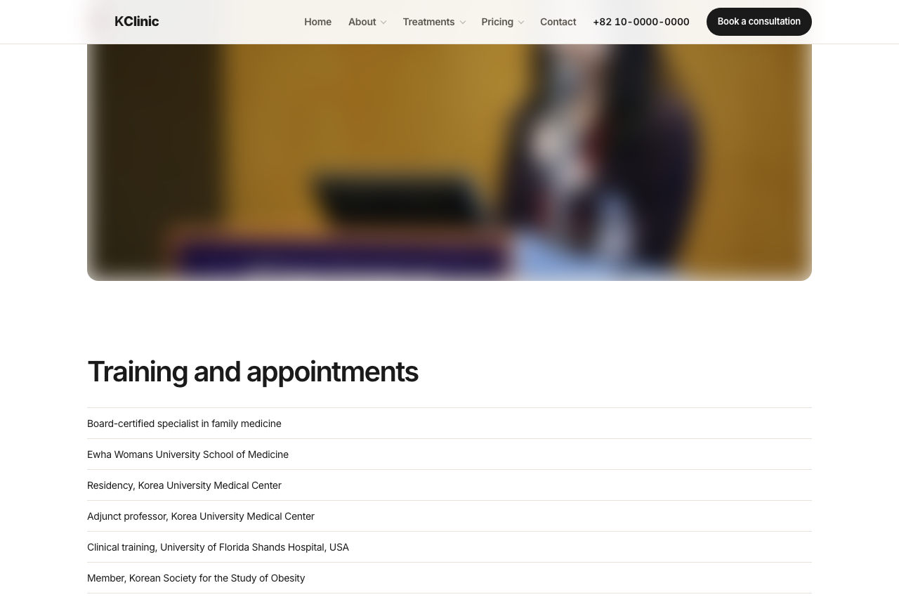
전문의 자격 · 이력 · 진료 철학이 한 URL에
칼럼 · 논문이 저자 정보로 이 페이지와 연결
구조화 데이터로 기계도 같은 내용을 읽음
검색 · AI · 환자가 모두 이 페이지를 참조
경력만 잔뜩 적는 건 의미가 적습니다 · 이 원장님이 환자를 볼 때 뭘 중요하게 보는지가 보여야 합니다
인터뷰 칼럼
인터뷰 주제로 만드는 원장 칼럼
경력 나열과 별개로, 인터뷰가 원장의 기준을 문장으로 남깁니다 · 실제 게재 화면 · 사진 · 병원명 가림
진료 철학 인터뷰 · "피부만 보지 않는 이유"dermacolumn.com
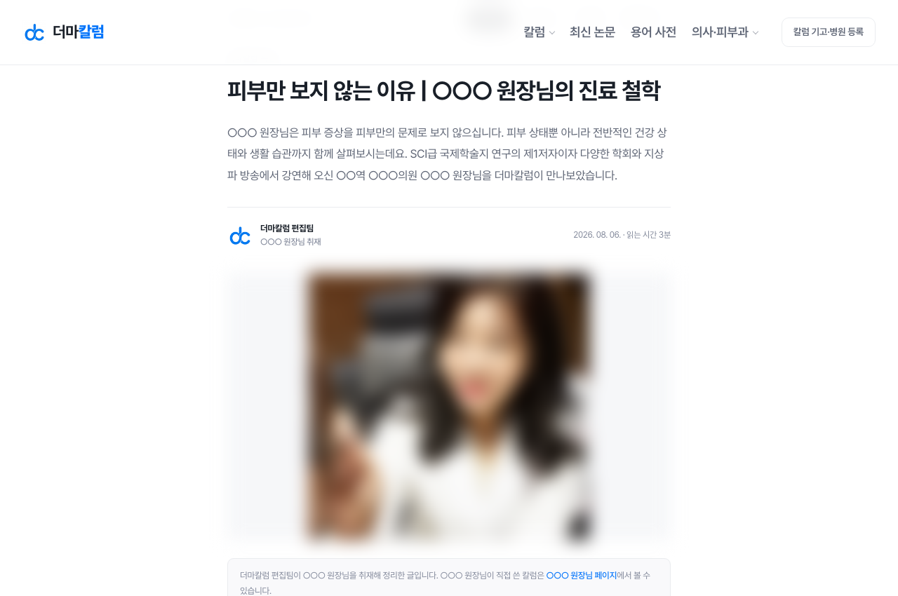
주제 : 진료 철학 · 치료를 나누는 기준 · 권하지 않는 경우
편집팀 취재 표기 · 원장 직접 칼럼과 링크로 연결
논문 · 학회 · 방송 이력이 본문에서 자연스럽게 언급
프로필 페이지 ↔ 인터뷰 ↔ 칼럼이 서로 연결
같은 주제, 두 글
예약 전 진료실에 원장이 보이려면
프로필 다음은 글 · 글에도 원장이 보여야 합니다
평범한 대행 원고
어느 병원이든 같은 글
✕기미의 정의
✕원인 · 증상
✕치료 방법 소개
✕주의사항
원장이라면 이렇게 말했을 글
사람이 보이는 글
·"이 정도 색소라면 처음부터 강하게 치료하지 않습니다"
·"환자분들이 가장 많이 오해하시는 부분은…"
·"이런 경우에는 오히려 시술을 권하지 않습니다"
왼쪽 글에 틀린 말은 하나도 없습니다 · 그런데 병원명을 가리면 어느 병원 글인지 알 수 없습니다
원장의 문장 · 1
원장이 보이는 글로 바꾸려면 ①
항목
글에 들어가는 형태
치료를 나누는 기준
같은 증상인데 방법이 달라지는 결정 변수
멈추는 기준
더 하지 않고 끝내는 지점
권하지 않는 경우
환자가 원해도 말리는 케이스
기대를 낮추는 지점
효과의 한계 · 회복 기간의 현실
원장의 문장 · 2
원장이 보이는 글로 바꾸려면 ②
항목
글에 들어가는 형태
절충
효과와 부작용 사이에서 무엇을 우선하는지
상담실 단골 질문
실제 질문과 원장의 실제 답
흔한 오해
환자가 잘못 알고 오는 것
단정하지 않는 부분
의료진도 확언하지 않는 영역
한 글에 적어도 두 가지는 들어가야 한다고 봅니다 · 하나도 없다면 그 원장님 글이라고 하기 어렵습니다
[ 2 ]
이 전부를 받치는 기반, 개원 인프라
지금 만들어 두면 그대로 자산 · 나중에 고치려면 전부 재공사
세 가지
개원할 때 같이 만들어야 하는 것
병원 정보
기본
병원명 · 주소 · 연락처
진료시간 · 진료과목
모든 채널에서 동일하게
원장 정보
사람
이름 · 전문의 여부 · 경력
학회 · 논문 · 주 진료 분야
공개 프로필 페이지
콘텐츠
기준
어떤 환자를 보는지
어떤 경우 권하지 않는지
상담실 단골 질문
병원 브랜드만 만들면 절반 · 원장 정보를 같이 만들어야 검색과 AI가 사람을 인식함
등록 화면
지도 · 프로필 등록은 개원 전에
두 곳 모두 무료 · 사업자등록 후 바로 등록 가능
Google 비즈니스 프로필 등록business.google.com
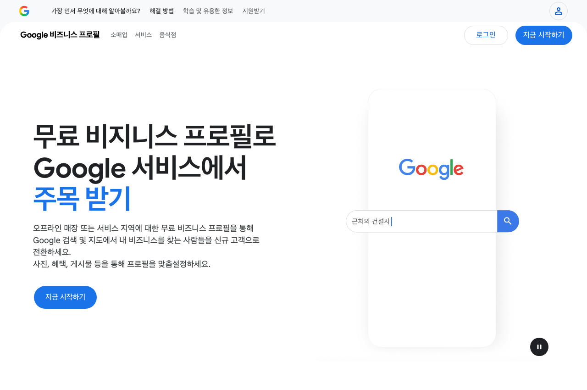
네이버 스마트플레이스 등록smartplace.naver.com
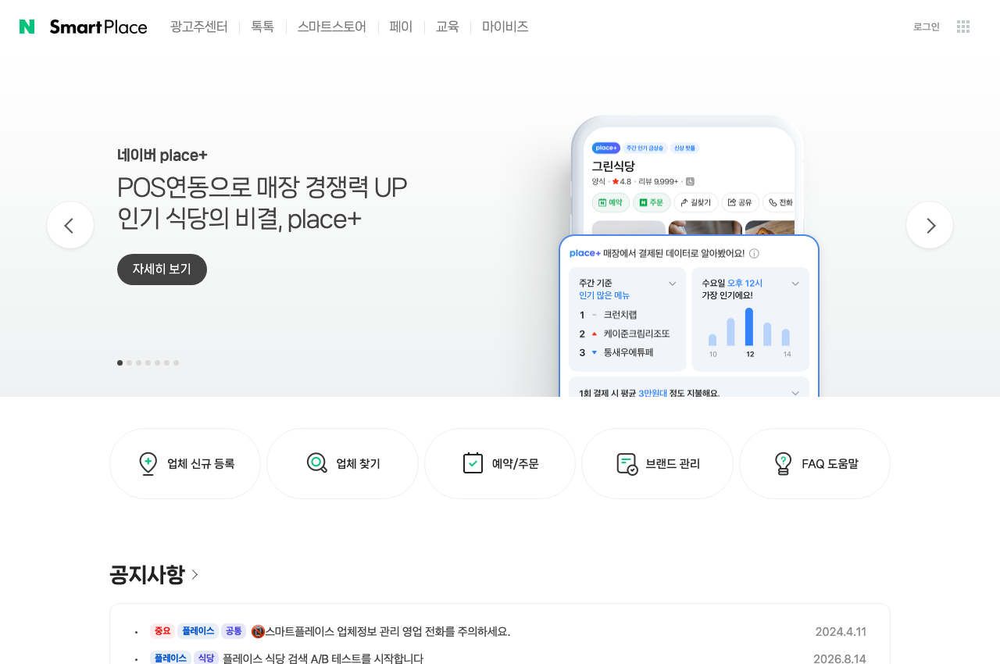
여섯 영역 중 '위치 정보'의 실물 · 이름 · 주소 · 진료시간을 홈페이지와 동일하게 · 이후 리뷰가 여기에 쌓임
비용 순서
개원 초기 마케팅비, 어디부터
먼저
소유와 측정
도메인 · 계정 소유
플레이스 · 홈페이지 기본 구조
원장 프로필 · 유입 측정
그다음
유입
검색광고
콘텐츠 · 리뷰
SNS
확장
고도화
SEO · GEO 확장
다국어 · 해외 환자
외부 매체
광고비를 늘리기 전에 측정 구조 먼저 · 순서가 바뀌면 무엇이 효과였는지 알 수 없음
발주 전
홈페이지 계약 전에 확인할 것
개원 준비 중이라면 이 화면을 캡처해 업체 견적 단계에서 그대로 확인
영역
항목
소유
도메인 명의 · 관리자 계정 → 병원 보유
측정
GA4 · 구글 서치콘솔 · 네이버 서치어드바이저 연결
검색
sitemap · robots.txt · 대표주소(canonical) · HTTPS
AI
텍스트 기반 페이지 · 구조화 데이터(JSON-LD) · AI 크롤러 차단 여부
확장
원장별 프로필 URL · 시술별 개별 URL · 다국어 구조 · 계약 종료 후 소스 · 콘텐츠 귀속
업체가 다섯 영역에 바로 답하지 못하면 그 자체가 판단 근거 · 세부 항목 목록은 QR 자료에
템플릿 사이트
아임웹 등으로 홈페이지를 만들 계획이라면
방금 표의 "AI 크롤러 차단" 항목, 실제 사례 · OpenAI 계열 봇 직접 접근 차단 · 일반 검색엔진은 정상 수집
ChatGPT에 링크 전달 시 403 Forbidden
플랫폼 차원의 보안 정책이라 사이트별 예외 설정이 어렵다
차단 대상은 GPTBotChatGPT-User 등
구글·빙·네이버 등 일반 검색엔진은 정상 수집
출처 : 아임웹 고객센터 안내 · 플랫폼 정책은 변경될 수 있으므로 계약 전 현재 상태를 직접 확인하시는 것을 권합니다
대응 방법 4가지
A. 기존 홈페이지에서 가능한 범위까지 개선
B. 별도 콘텐츠 허브를 두고 홈페이지와 연결
C. 홈페이지 제작 도구 자체를 변경
D. 지금은 AI보다 네이버·플레이스를 우선
판단 근거 : 유입경로 기록
시장 현황
'상위노출 보장' 검색 결과
홈페이지 다음 계약이 보통 블로그 대행 · 개원하면 가장 먼저 오는 연락이 이런 제안 · 검색어 : 병원 블로그 상위노출 보장 · 업체명 가림
네이버 검색 광고 영역 · "보장 · 100% 환불 · 월 10건 40만원~"2026.08
네이버 서치어드바이저 스팸 정책 원문공식 문서
왼쪽은 노출을 보장하고, 오른쪽에서 플랫폼은 그 수법을 제재 대상으로 명시 · 발행 건수를 파는 상품의 위치
책임
맡길 수 있는 광고, 맡길 수 없는 책임
"계약을 통해 제3자에게 광고를 대행하는 것은 가능하나, 광고의 주체는 의료기관 개설자·의료기관의 장 또는 의료인이 되어야 하며, 계약에 따른 제3자 의료광고의 의료법 위반행위 책임은 의료인 등에게 귀속됩니다."
보건복지부 「치료경험담 등 불법의료광고 286건 적발」 보도참고자료 · 2022.04.18
415건
2개월간 모니터링
286건
위법 소지로 조치 요청
83.6%
위반 매체 중 블로그 비중
보건복지부 보도자료2022.04.18
의료광고 책임 → 의료기관
규제 경계
의료광고 심의와 콘텐츠의 경계
GEO 콘텐츠라고 예외가 아닙니다 · 광고성이 되는 순간 같은 규제
구분
내용
정보성 콘텐츠
질환 설명 · 치료 기준 · 부작용 · 회복 기간 · FAQ — 광고가 아니면 사전심의 대상 아님
광고성 콘텐츠
시술 홍보 · 이벤트 · 가격 할인 · 전후사진 — 인터넷 매체 광고는 사전심의 대상이 될 수 있음
금지 표현
치료 효과 보장 · 치료경험담 광고 · 비교 · 비방 — 매체와 무관하게 금지
경계 판단
정보 글에 보장 · 유인 표현이 들어가는 순간 광고로 취급될 수 있음 · 발행 전 표현 점검
책임은 앞 장과 동일하게 의료기관 귀속 · 저희 원고 검수에 이 항목이 포함되는 이유
의료법 제56조 · 제57조(의료광고 금지 · 사전심의) · 보건복지부 안내 기준 · 개별 사안은 심의기구 확인
다섯 가지
처음 대행사를 쓸 때 확인할 것
영역
확인
데이터
무엇을 측정해서 보고하는가
콘텐츠
누가 쓰고, 누가 검수하는가
기술
서치콘솔 · 사이트 권한을 병원이 볼 수 있는가
자산
계정과 콘텐츠가 계약 종료 후 병원에 남는가
법
의료광고 책임 구조를 이해하고 있는가
계약서 조항 · 가격 시세 · 인수인계 목록은 QR 자료에 · 누구에게 맡기든 성과는 직접 재야 합니다 → 다음 파트
공정거래위원회 보도 · 조사 55개사 중 18개사 조치언론 보도
[ 3 ]
만든 것의 확인, 검색어에서 재방문까지
질문 세트 관측 · 서치콘솔 · GA4 · 문진 2문항 · 리콜
질문 세트
키워드 순위표 대신, 질문 세트
탐색
"○○역 피부과 추천"
증상
"기미 치료 어디가 좋아?"
시술
"울쎄라 경험 많은 의사"
비교
"A의원 B의원 차이"
브랜드
"○○의원 어때?"
질문마다 기록 : 언급 여부 · 몇 번째 · 경쟁 병원 · 출처 · 정보 정확성
우선순위
좁은 질문부터 선점하기
우선순위 판단 : 시장 크기 × 우리 전문성 × 보유 콘텐츠 × 경쟁 강도 × 환자 가치
넓은 질문
정면 경쟁
✕"강남 피부과 추천"
✕대형 병원 · 플랫폼과 정면 경쟁
✕개원 초기에는 등장 확률이 낮음
좁고 구체적인 질문
기준이 드러나는 질문
·"수유 중 색소 치료 상담이 되는 곳"
·"피부가 얇고 홍조가 있는 사람의 리프팅"
·진료 기준이 드러나는 질문 · 답하는 병원이 적음
측정 루프
GEO는 발행보다 관측이 먼저
1
질문 정의
환자가 물을 질문 목록
2
답변 수집
AI별 · 주기적으로
3
갭 확인
빠진 질문 · 경쟁 인용
4
수정
콘텐츠 · 사이트
5
재측정
같은 질문으로 → 1
업계 사례 : 48시간 주기 · 최대 200개 질문 모니터링 (업계 공개 자료) · 병원은 여기에 의료광고법 · 네이버 · 리뷰 · 다국어가 더해짐
관측 화면
일 단위로 쌓는 관측 기록
운영 초기 화면 · 2026.08 · 추적 검색어 28개 · Google Top 20 진입 2개 · 병원명 가림
GEO 모니터 일일 관측2026.08
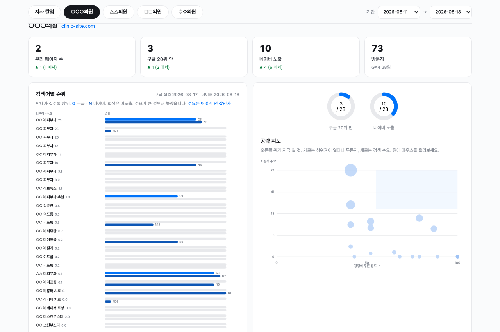
월간 브리프 ○○○의원 원장 전달본2026.08
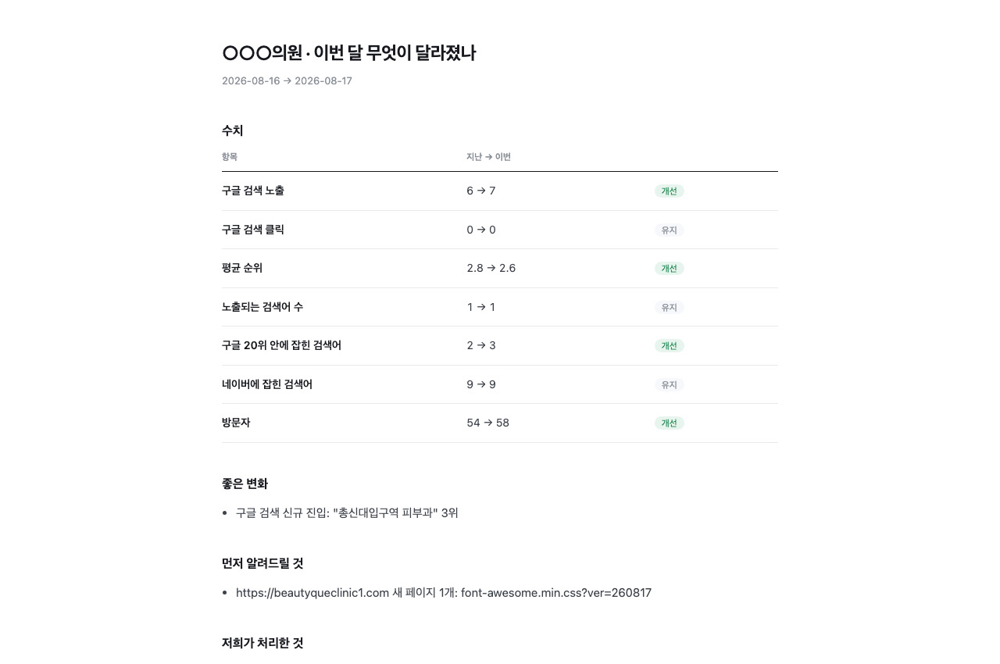
관측 방법 · 검색어 · 질문 목록 고정 · 주기 고정(일 단위) · 같은 질문 반복 측정 · 수집 시점 · 엔진 명기 · 오른 것이 없으면 없다고 적음 · 관측 결과가 다음 달 작업 목록을 정함 · AI 답변은 확률적이라 한 번 캡처로 판단하지 않음
트리 칸 · 채널별 유입 · Acquisition
환자 검색어와 행동 · 서치콘솔과 GA4
둘 다 무료 · 개원 때 연결해 두면 첫날부터 쌓임 · 계정 소유는 병원
서치콘솔 · 환자가 어떤 검색어로 들어오는가search.google.com/search-console
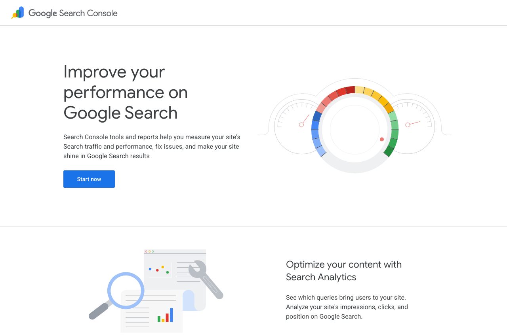
GA4 · 들어와서 무엇을 보는가 · 예약 페이지 도달marketingplatform.google.com
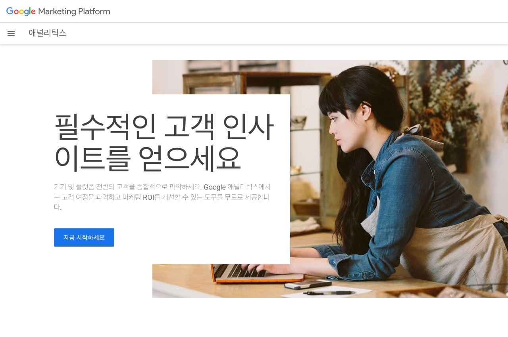
검색어(서치콘솔) → 행동(GA4) → 매출(문진 유입 기록 × 병원 장부 대조) 순서로 연결 · 네이버는 서치어드바이저가 같은 역할
측정의 변화
측정 방식의 변화
서치콘솔 · GA4에도 안 잡히는 경우가 생깁니다
예전 측정 방식
검색→사이트 방문→클릭 집계
방문 수로 효과를 잴 수 있었습니다
지금 생기는 경우
질문→AI 답변에서 확인→방문 없음
병원을 알았어도 로그에는 남지 않습니다
보완책 : 초진 문진 유입경로 기록
유입 기록
개원 첫날부터, 두 가지만 기록
초진 문진표에 두 줄 · 첫 분기 데이터가 그대로 생김
Q1. 저희 병원을 처음 알게 된 곳은 어디인가요? (중복 선택)
네이버 검색플레이스 · 지도인스타그램유튜브지인 추천커뮤니티 · 카페ChatGPT 등 AI간판기타
Q2. 예약 전에 어떤 곳을 더 확인하셨나요?
블로그홈페이지후기 · 리뷰유튜브AI에 다시 질문지도 · 사진
접수 체크 → 월 1회 집계 · "모름"도 기록 · 첫 접점과 확인 채널을 나누면 어디에 쓸지가 달라짐
남은 칸
이제 채울 칸 넷
유입은 봤으니, 나머지는 도구 화면으로 빠르게 봅니다
트리 칸 · 전환율 · Activation
문의에서 예약까지 · 응대가 만드는 전환
상담 인박스 실제 화면 · 병원 특정 정보 가림
인박스 · 문의 응대 · AI 제안 답변app.mediboost.ai
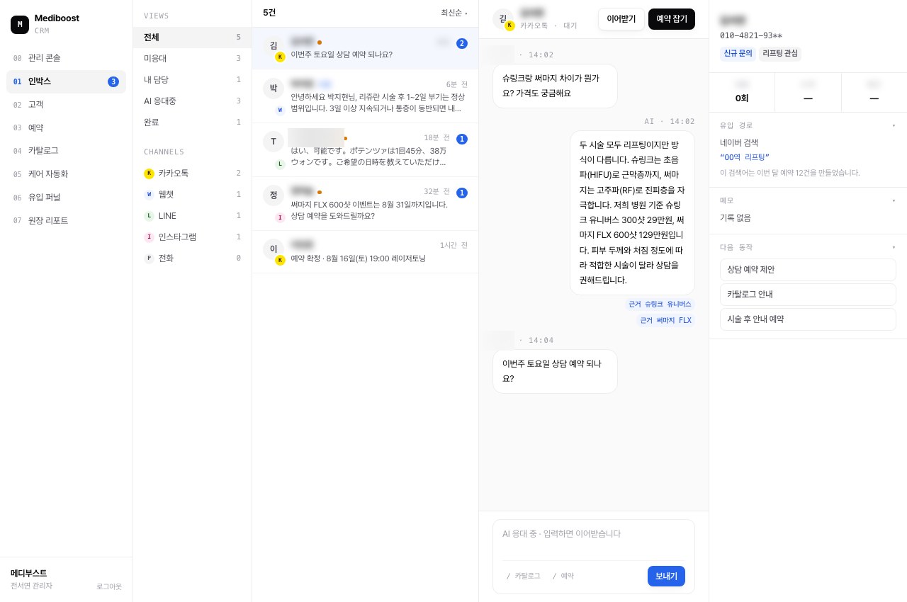
채널별 문의 통합 · 미응대 우선 처리
병원 카탈로그 기반 AI 답변 초안 · 실장 확인 후 전송
외국인 문의 포함 · 언어로 놓치는 예약 감소
응대 속도 = 전환율 · 미응대 = 이탈
상담실장의 반복 답변 부담을 줄이면서, 답변 품질은 병원 기준으로 고정
트리 칸 · 재진 · Retention
시술 주기 알림으로 만드는 재방문
트리의 다음 칸, 재진 · 상담 · 예약 · 유입 관리 도구 실제 화면 · 병원 특정 정보 가림
유입 퍼널 · 검색어 · 채널이 만든 문의와 예약app.mediboost.ai
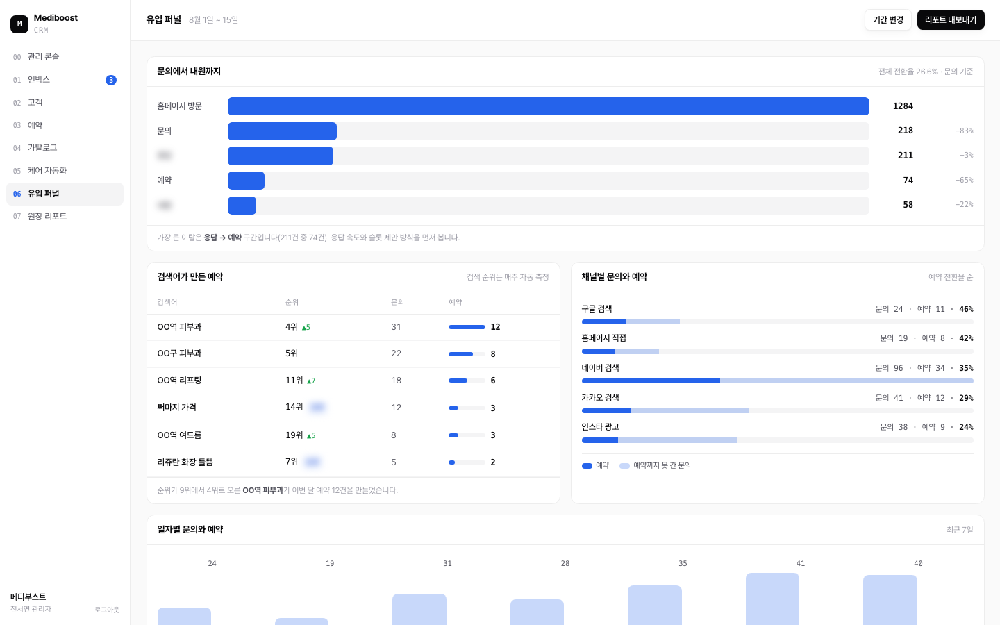
케어 자동화 · 시술 주기별 알림 D+1 ~ D+150app.mediboost.ai
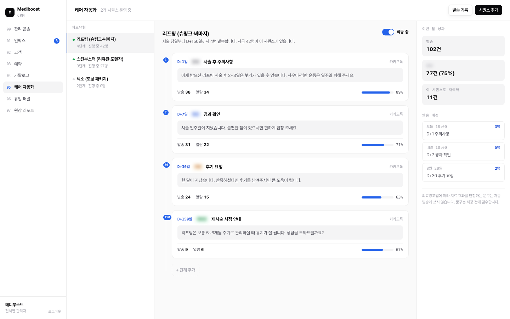
왼쪽 : 검색어 순위 → 문의 → 예약까지 연결 · 오른쪽 : 주기 알림 열람률과 재예약 · 기록 틀은 엑셀로 시작해도 됨
트리 칸 · 방문당 시술 수 · Revenue
계절 키워드로 잡는 이벤트 · 패키지 시점
시술 검색 트렌드 모니터링 · 실제 화면 · 병원명 가림
트렌드 · 계절 키워드 · 베스트 · 신규 급상승 · 8월 맞춤메디부스트 화면 · 병원명 가림
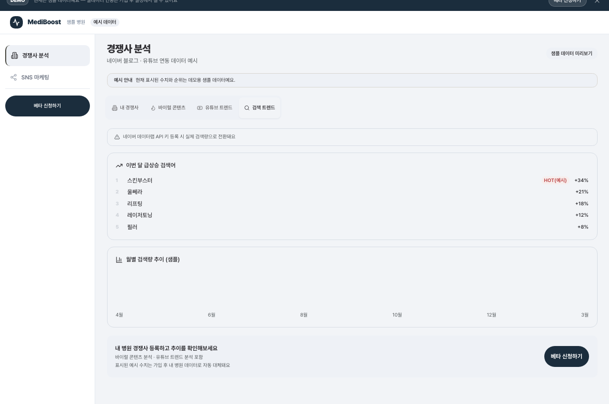
베스트 키워드 · 신규 급상승 시술 · 월별 맞춤 계절 키워드
오르기 전 달에 이벤트 · 패키지 구성 · 콘텐츠 발행
패키지는 방문당 시술 수를 올리는 도구 · 트리의 오른쪽 칸
트리 칸 · 시술 평균 단가 · 믹스 · Revenue
시술별 매출 1위 ≠ 순이익 1위
앞의 지표 트리를 화면으로 구성한 예 · 예시 데이터
시술별 수익성 · 원가 입력 → 순이익 계산예시 데이터
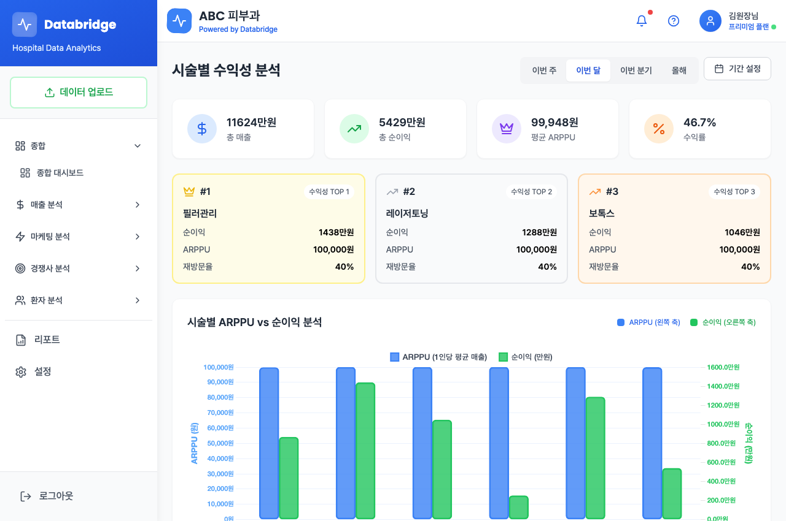
시술별 매출 상세 · 환자 수 × 평균 단가 분해예시 데이터
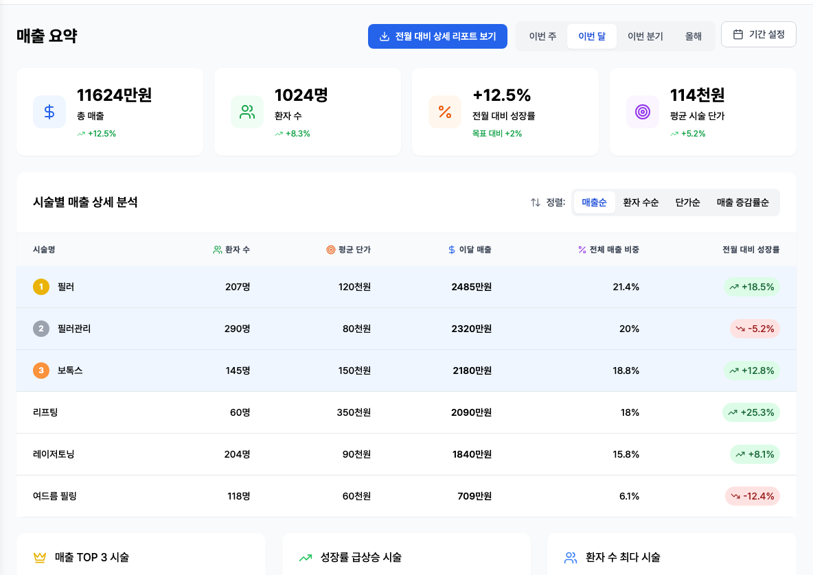
시술별 원가를 저장해 두면 매출이 아니라 순이익으로 믹스를 판단하게 됨 · 기업 BI 대시보드에 쓰는 구조를 병원 단위로 줄인 것 · 엑셀 피벗으로 시작해도 구조는 같음
AARRR
그로스 마케팅 틀로 본 오늘의 범위
방금까지 슬라이드 구석에 붙어 있던 글자들을 모으면 이 퍼널이 됩니다 · 유입부터 소개까지
A
유입Acquisition
검색 · 지도 · AI 노출 질문 세트 관측 · GEO
A
첫 경험Activation
홈페이지 · 콘텐츠 → 문의 · 예약 GA4 · 예약 페이지 도달
R
재방문Retention
시술 주기 관리 리콜 알림 · CRM
R
소개Referral
리뷰 · 지인 추천 · 커뮤니티 리뷰 응대 원칙 · 답변
R
매출Revenue
시술별 매출 · 순이익 문진 × 병원 장부
지표 트리가 "무엇을 키울지"라면, 이 다섯 칸은 "어느 단계를 고칠지" · 같은 데이터로 둘 다 봅니다
기록
측정과 운영은 기록으로 보관
예시 · 한 병원의 문서 목록 · 계약서 · 점검 결과 · 진단 리포트 · 병원명 가림
보고서 자료실 · 고객별 문서 목록2026.08
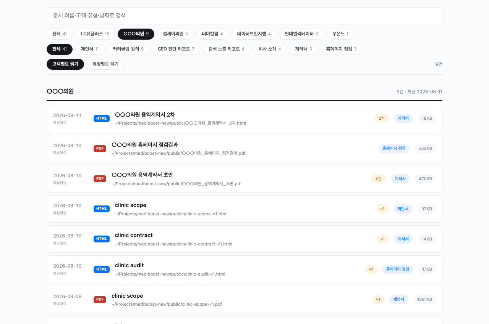
계약서 · 점검 결과 · 진단 · 월간 브리프를 날짜 있는 파일로
업체를 쓰든 직접 하든 같은 원칙 · 구두 보고로 끝내지 않음
3개월 뒤 같은 질문("뭐가 달라졌나")에 문서로 답할 수 있게
아직 모르는 것
GEO에 대한 흔한 기대와 확인된 사실
흔한 기대
확인된 사실
✕한 번 캡처에 나오면 성과다
AI 답변은 확률적 · 같은 질문도 매번 다름 → 반복 측정이 기본
✕ChatGPT에 나오면 다 나온다
엔진마다 수집 경로 · 출처가 다름 · Gemini 결과와 불일치
✕인용되면 추천된다
Citation ≠ Recommendation · 출처로만 쓰이고 추천에서 빠질 수 있음
✕추천되면 환자가 온다
Recommendation ≠ 내원 · 재검색 · 확인 · 예약 단계가 남음
✕AI 노출이 늘면 매출이 는다
장기 데이터 부족 · 직접 연결 근거는 아직 없음
✕AI가 구글을 대체했다
대체 근거 없음 · 기존 검색과 병행되는 단계
AI 가시성 측정의 한계에 대한 업계 비판 (Search Engine Land, 2026) · 학계 리뷰(45개 연구)도 GEO를 확률적 과정으로 봄
[ 4-1 ]
실제 사례, 서울의 한 피부과
초반의 여정 → 채널 → 측정 구조를 한 병원에 그대로 적용한 기록 · 병원명 비공개 · 전부 실제 화면
시작 상태
네이버 블로그만 있던 병원
개원 후 여러 해가 지난 병원 · 논문 · 학회 · 방송 이력이 충분한 원장 · 계약 시점의 채널 상태입니다
네이버 블로그
운영 중
지역 키워드 글 위주 원장 기준은 안 보임
홈페이지
있지만 방치
측정 도구 미설치 원장 이력은 로그인 뒤
구글 검색
찾기 어려움
색인 일부 누락 블로그 글은 차단 정책상 없음
AI 답변
언급 없음
인용할 원문이 구글 쪽에 없음
영문 사이트
대행사 범용
원장 정보 없음 어느 병원이든 같은 문구
글은 계속 쓰고 있었는데, 쌓이는 곳이 네이버 안이었습니다 · 여기서부터 하나씩 열어 봤습니다
처음 검색해 봤더니
검색 결과에 없는 원장의 경력
서울의 한 피부과 · SCI 논문 · 학회 강연 11건 · 방송 자문 이력
2/28
추적 검색어 중 Google Top 20 진입
나머지 26개는 미노출
0개
홈페이지 구조화 데이터
154건
로그인 뒤에 잠긴 원장 답변
11건
검색되지 않는 학회 이력
GEO 모니터 · 메디부스트 자체 툴 · 시작 시점 검색어별 순위병원명 가림 · 수요 큰 순
○○역 피부과수요 73G 6위N 5위
○○ 피부과수요 26G 미노출N 27위
○○ 피부과수요 20미노출
○○ 피부과수요 12미노출
○○역 피부과수요 11미노출
○○ 피부과수요 10G 미노출N 6위
○○역 보톡스수요 4.6미노출
○○역 피부과 추천수요 1.0G 9위N 미노출
외 20개 검색어 중 17개 미노출 · 경력이 없는 원장님이 아니라, 온라인에 안 나와 있던 것
진단
계약 후 첫 작업 · 12항목 진단
그래서 고치기 전에 전부 열어봤습니다 · 작업일지 2026-08-08 · 약 60개 페이지 조회 · 키워드 9개 노출 점유율 측정 · 경쟁 병원 비교
첫 진단 화면병원명 가림
보안 인증서 미설치
사이트맵이 죽은 옛 도메인을 가리킴
구조화 데이터 0개
방문 분석 미설치
원장 이력이 로그인 뒤에 잠김
우선순위
문제가 12개라면, 무엇부터
즉시
막힌 것 풀기
SSL · 대표주소
사이트맵 재생성
오래된 정보 수정
다음
원장 보이게
원장 프로필 공개 페이지
질문 단위 콘텐츠
나중
확장
다국어
AI 모니터링 확대
무조건 많이 고치는 게 아니라, 먼저 고칠 걸 고르는 것
홈페이지를 열어 보니
옛 주소를 가리키는 사이트맵
"즉시" 목록의 첫 항목 · 파일을 직접 열어 확인하고, 되돌릴 수 있게 전체 백업 후 단계별로 반영
점검 결과 원장 전달본병원명 가림
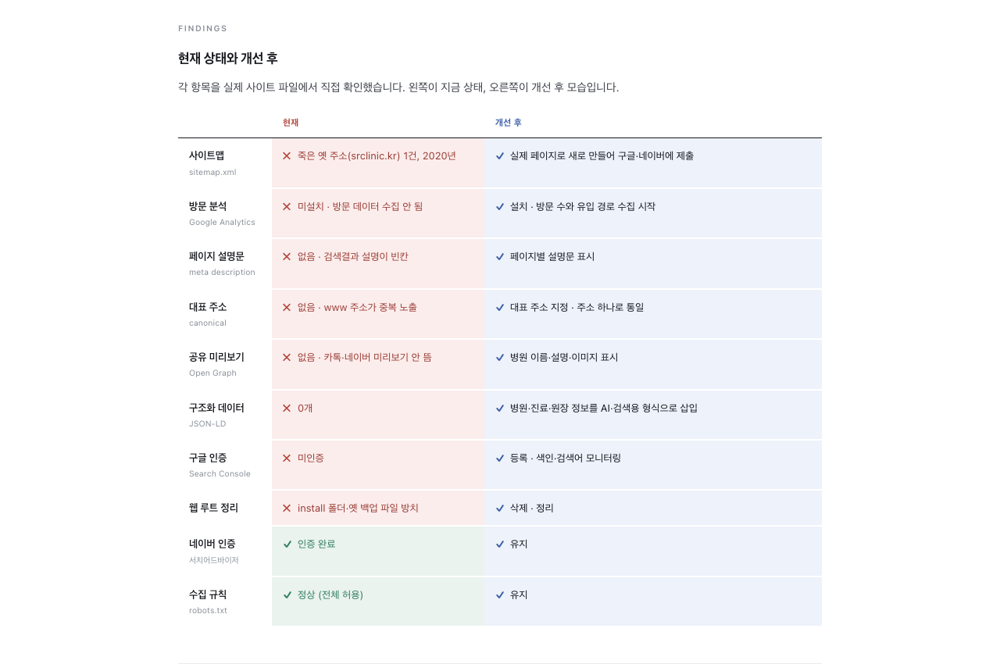
서치콘솔 · 애널리틱스 설치 (기존 미설치)
사이트맵 재생성 · 죽은 옛 주소 정리
SSL · 대표주소 · 설명문 · 구조화 데이터 · llms.txt
원장 이력 · 진료 기준을 공개 페이지로
자료를 모아 보니
네 곳에 흩어진 경력 · 잠긴 답변 154건
이전 · 각자 따로
흩어진 이력
✕SCI 논문 → 학술 DB에만
✕학회 강연 11건 → 어디에도 없음
✕방송 자문 → 방송사 페이지에만
✕환자 답변 154건 → 로그인 뒤에 잠김
이후 · 하나의 프로필로
한 페이지로 집약
·공개 프로필 페이지에 이력 집약
·칼럼마다 저자 정보로 연결
·구조화 데이터로 기계도 읽게
그래서 글부터 쓰지 않고
원장의 기준부터 문서로 정리
브랜드 방향 검토 요청 · 원장 전달본 · 병원명 가림
브랜드 방향 정리 문서2026.08.17
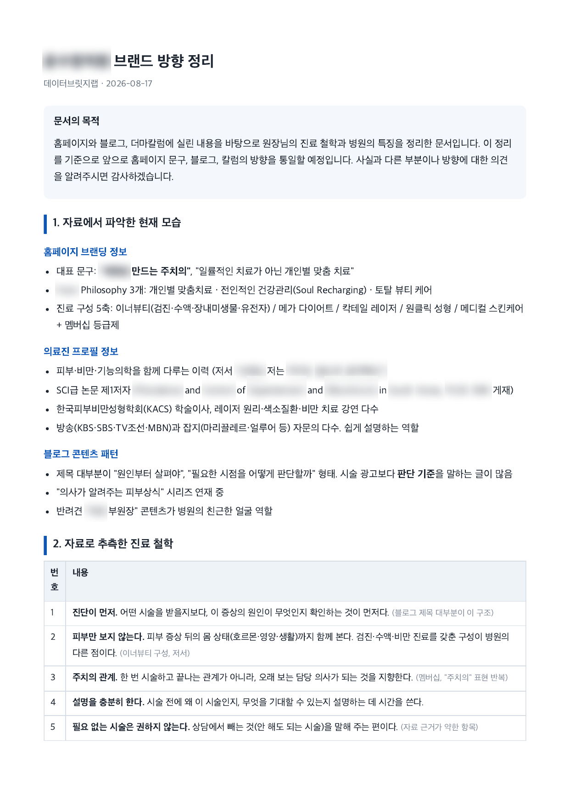
홈페이지 · 블로그 · 칼럼에서 진료 철학 5가지 추출
"진단이 먼저" · "피부만 보지 않는다" · "필요 없는 시술은 권하지 않는다"
추측한 항목은 사실 확인 요청으로 원장 검수
이 문서가 이후 모든 문구의 기준이 됨
그래서 처음부터 글을 쓰지 않았습니다 · 기준 없이 쓰면 병원마다 비슷한 글이 나옵니다
그다음, 글의 변화
같은 주제, 바뀐 글
BEFORE
정의 → 원인 → 치료
✕"기미 치료란?"
✕정의 → 원인 → 치료 → 주의사항
✕어느 병원에 넣어도 같은 글
AFTER
기준 · 저자 연결
·"기미가 있다고 무조건 토닝부터 하지는 않습니다"
·치료를 나누는 기준 · 권하지 않는 경우가 본문에
·저자 · 소속 · 프로필 연결
영문 사이트도 같은 문제
관리되지 않던 영문 사이트 · 전후
의사 정보가 없진 않았지만, 깨진 시술 페이지와 오류 난 구조가 방치된 상태였습니다
기존 · 방치된 시술 페이지 · 범용 문구업체명 가림
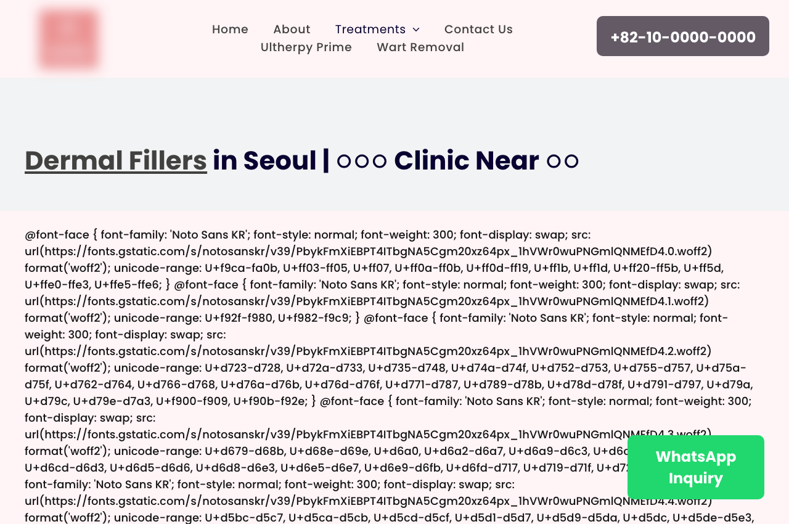
신규 · 질문 단위 페이지 · 구조화 데이터병원명 가림
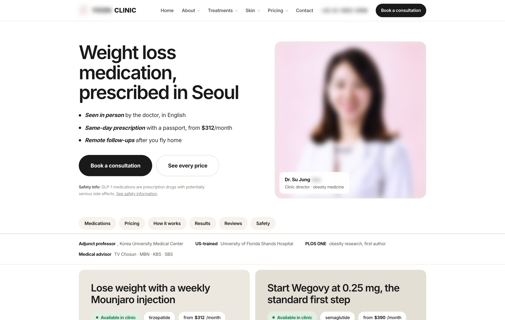
✕업데이트 안 된 시술 페이지 · 깨진 링크
✕오류 난 구조화 데이터 · 죽은 사이트맵
·질문 단위 페이지 · 원장 실명 · 자격 첫 화면
·구조화 데이터 정상 · 콘텐츠 저작권 병원 귀속
커뮤니티 답변
AI가 인용하는 커뮤니티 · 레딧 답변
발견 : 외국인 환자는 병원 홈페이지보다 커뮤니티 질문에서 먼저 정보를 찾는 경우가 있음 · 실제 게시글 요지
reddit.com/r/Living_in_Korea
GLP1 availability — what do these cost in Korea? (거주 외국인)
Answered as clinic staff: public price list, passport-only consultation, export limits follow customs rules. Also noted the US can be cheaper for some doses.
reddit.com/r/KoreaSeoulBeauty
How can a foreigner get Wegovy or Ozempic? (서울 방문 예정자)
Foreigners can be prescribed after an in-person consult · passport only at reception · explained how approval differs between the two drugs. Linked our foreigner guide page.
홍보 문구 없이 정보만 · 이런 커뮤니티 글은 구글 상위에 자주 노출되고 AI 검색이 인용하는 출처
실물
가격 질문에 답하는 페이지 · 계산기 · 일본어
발견 : 가격 질문은 칼럼보다 구조화된 페이지가 적합한 경우가 있음 · 병원명 가림
GLP-1 비용 계산기외국인 문의 1위가 총비용이라, 질문에 바로 답하는 페이지로
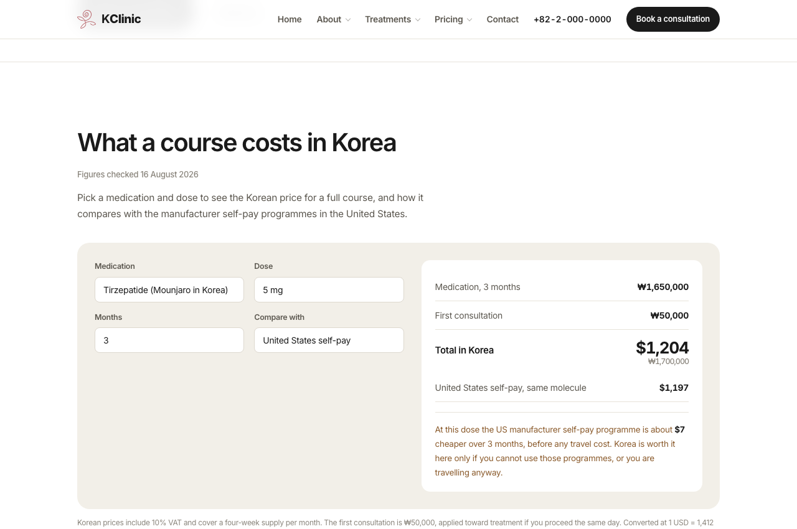
일본어 페이지일본 환자 검색 대응 · 요금 · 다운타임 중심 질문
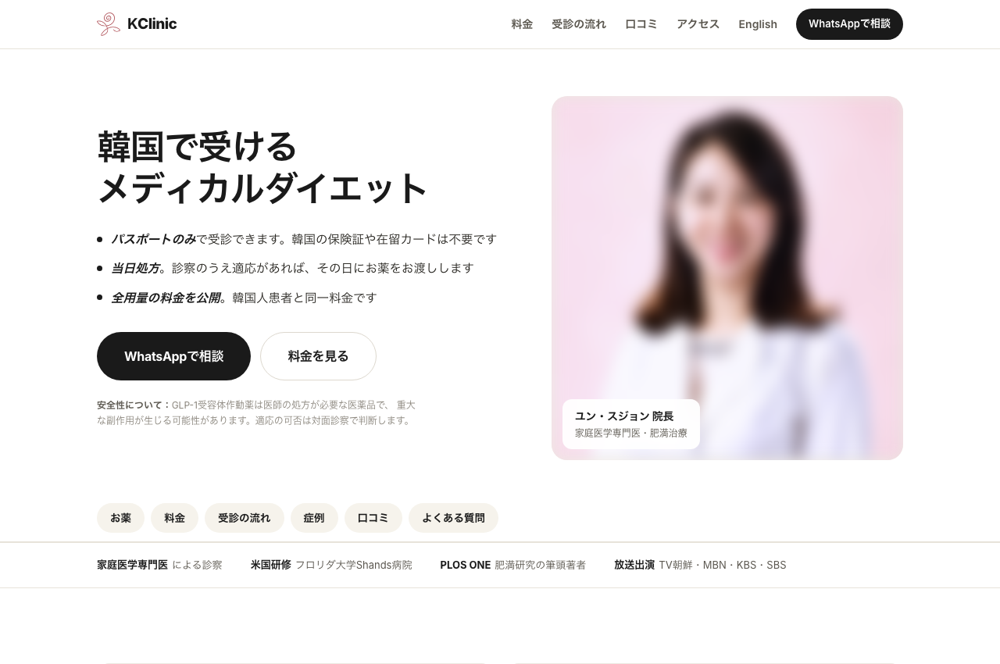
외부 출처
공식 홈페이지 밖의 공개 정보
발견 : 홈페이지 밖에서 저자와 소속이 확인되는 문서가 필요한 경우가 있음
종류 : 논문 DB · 학회 · 언론 기사 · 전문 칼럼 · 커뮤니티 답변 · 유튜브 · 디렉터리 · 리뷰

 search.naver.com · AI 브리핑 · 스마트블록 · 에어서치
search.naver.com · AI 브리핑 · 스마트블록 · 에어서치